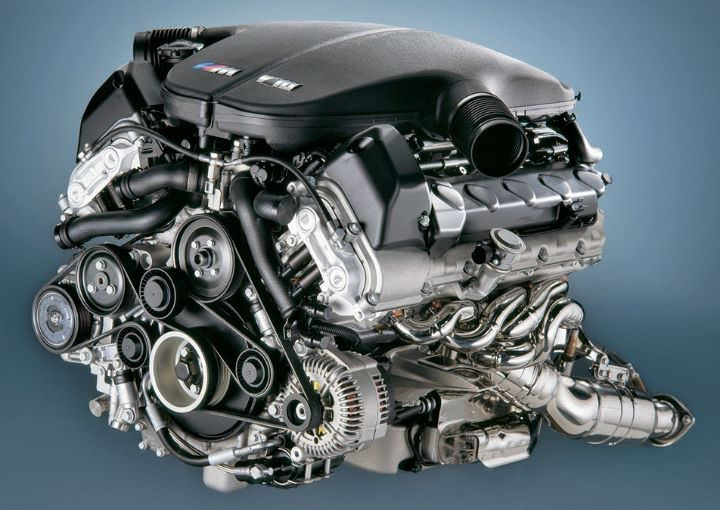

- : S85 5.0-liter naturally aspirated V10 (shared DNA with BMW's Formula 1 involvement at the time)
- Power: 500 hp (507 PS in Europe) @ 7,750 rpm
- Torque: 384 lb-ft (520 Nm) @ 6,100 rpm
- Redline: 8,250 rpm
Performance:
- 0–60 mph: ~4.1–4.7 seconds (depending on transmission and conditions)
- Top speed: Electronically limited to 155 mph, but could reach ~190 mph with optional M Driver's Package
Transmissions:
- Most markets: 7-speed SMG III automated manual (with paddle-shift)
- USA only: Optional true 6-speed manual gearbox
Production
Around 20,500 units produced worldwide.
This car was a bold departure — BMW took F1-inspired tech (individual throttle bodies, high compression, ion-sensing ignition) and put it in a four-door executive sedan.
The result? An addictive high-revving howl that's still considered one of the greatest engine notes in automotive history.
The exterior design (Chris Bangle era) was polarizing when new, but it has aged extremely well — aggressive yet elegant, especially in black, silver, or Interlagos Blue.
The Famous V10 Up Close
The engine bay is a work of art.
The Famous V10 Up Close!!
